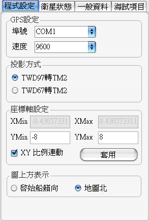
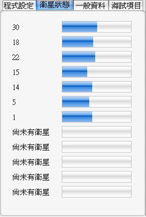
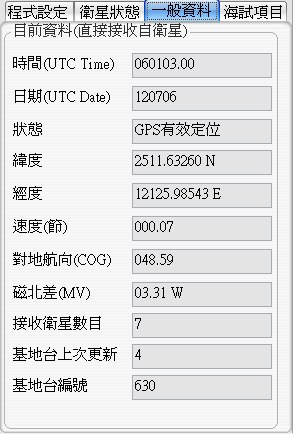
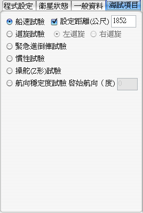

USDDC Sea Trial(UCTrial)船速量測程式
船速量測程式產品介紹
※聲明啟事：本 說明文件 所提及之各商標及圖形所有權歸各註冊公司所有
[回頁首]
產品規格與系統需求
產品規格：程式壓縮檔一份 約 0.5MB
系統需求：
1.IBM PC相容電腦，Pentium 以上 CPU
2.100MB 以上主記憶體
3.Windows NT/2k/XP 中文版作業系統
4..NET Framework 2.0以上環境
5.1024x768，256 色以上 VGA 卡的顯示模式
6.Microsoft 相容滑鼠
7.全部安裝需 4MB 以上硬碟空間
建議需求：
1.IBM PC相容電腦，Pentium 4 1800MHZ以上 CPU
2.30G以上硬碟空間
[回頁首]
程式取得
網頁下載：由公司下載處下載
聯絡作者：寄信給作者
[回頁首]
安裝與解除安裝方法
安裝程式：
下載後，解壓縮後雙擊執行UCTrial.exe即可執行。
解除安裝程序：
本程式為綠色軟體，直接刪除UCTrial目錄即可。
[回頁首]
操作介紹
使用前請詳閱本檔案，如有任何安裝或使用上問題歡迎來電、傳真或寄發
電子郵件至本公司科技室。
開啟及關閉 船速量測程式
※開啟 船速量測程式：
在解壓縮後的UCTrial目錄中，雙擊UCTrial.exe，即可啟動。
※關閉 船速量測程式：
如同一般關閉應用程式方式，按下右上角X即可關閉，但須注意在關閉程式前最好先正常關閉序列埠。
圖示說明
| 序列埠功能 |
| 開啟埠 |
本程式以序列埠(Serial port)和GPS溝通，
所以一開始便須先按下此鈕開啟序列埠，在開序列埠前須先在<程式設定>頁中設定序列埠號及速度。 |
| 關閉埠 |
當不再使用GPS時可關閉序列埠。 |
| 海試功能 |
| 開始 |
在<海試項目>頁中選定測試項目後，按下<開始>鈕開始測試，
在此同時程式才會開始繪出軌跡圖及進行NMEA Log存檔。 |
| 結束 |
結束海試項目測試，同時停止繪出軌跡圖及NMEA Log存檔。 |
| 存檔 |
若這次的測試正常結束，測試者可按下<存檔>鈕，將本次測試歷程存檔，
須注意的是，存檔時是依存檔鈕按下時之<海試項目>頁中的設定決定存檔檔名，故此設定必須正確無誤。 |
| 清除 |
清除軌跡圖及儲存在記憶體中的記錄。每次按下<開始>鈕時同時也執行本段程式。 |
| 畫面檢視功能 |
| 拉遠 |
坐標軸一次拉近(放大)一點點，拉遠的比例可在預設鈕右方的下拉式選框中設定。 |
| 拉近 |
坐標軸一次拉遠(縮小)一點點，拉近的比例可在預設鈕右方的下拉式選框中設定。 |
| 預設 |
切回預設的座標軸設定，預設是原點在正中間，橫縱軸都正負八米。 |
| 讀檔播放功能 |
| 讀檔 |
讀取之前按下<存檔>鈕後儲存的記錄檔，可重新播放。 |
| 播放 |
播放之前按下<存檔>鈕後儲存的記錄檔。 |
| 暫停 |
暫停播放，可按下<播放>鈕後繼續。 |
| 停止 |
停止播放，再按下<播放>鈕後可重新播放目前記錄檔。 |
| 其他功能 |
| 讀NMEA |
在海試項目進行的同時，系統會錄下由GPS解碼器所送來的NMEA 0183格式訊息，
有必要時即可按下<讀NMEA>鈕來重新分析此記錄檔。 |
| 幫助 |
顯示本說明畫面 |
操作流程說明
| 按鈕功能說明 |
| 序列埠功能 |
啟始時預設<開啟埠>鈕可按，<關閉埠>鈕不可按，
按下<開啟埠>鈕後若順利接通所設定的序列埠，則<開啟埠>鈕會暗下來而不可按，<關閉埠>鈕變為可按，同時海試功能中的<開始>鈕變為可按，<讀NMEA>鈕變為不可按，
此時按下<關閉埠>鈕若順利關閉序列埠，則<關閉埠>鈕會暗下來而不可按，<開啟埠>鈕變為可按，同時海試功能中的所有鈕變為不可按，<讀NMEA>鈕變為可按。 |
| 海試功能 |
海試功能中，啟始時皆不可按，在測試人員按下序列埠功能中的<開啟埠>鈕接通所設定的序列埠後，
<開始>鈕會變為可按，其他鈕仍為不可按。
此時可按下<開始>鈕進行測試，按下<開始>鈕後<開始>鈕即會變為不可按，同時<結束>鈕會變為可按。
此時若按下<結束>鈕結束測試，則<結束>鈕會變為不可按，同時<開始>鈕會變回可按，另外<存檔>鈕及<清除>鈕也會變回可按，提醒測試人員要存檔或清除後方能進行下一次的測試。
此時若按下<存檔>鈕或<清除>鈕，則<存檔>鈕及<清除>鈕都會變回不可按，即回到剛按下<開啟埠>鈕後的狀態，只有<開始>鈕可按。
但若在未按下<存檔>鈕或<清除>鈕前就再按下<開始>鈕，則程式會提醒測試人員前次的測試當未存檔，同時有<是><否><取消>三鈕可選擇，
按下<是>則依目前設定存檔後開始下次測試，按下<否>則不存檔後開始下次測試，按下取消則什麼都不作回到未按<開始>鈕前狀態。 |
| 畫面檢視功能 |
在測試進行時的軌跡會畫在軌跡圖中，本軌跡圖可即時縮放，不影響測試的進行，在測試進行中的同時，
可按下<拉近>鈕放大軌跡圖，按下<拉遠>鈕縮小軌跡圖，同時可以滑鼠滾輪進行同功能的操作，另外可以滑鼠左鍵拖曳的方式平移軌跡圖，
最後如果不小心將軌跡平移出畫面，可按下<預設>鈕將軌跡圖拉回原預設座標設定。
在本功能三按鈕最右方有一個下拉式選框，可選擇按下<拉近>鈕或<拉遠>鈕或以滾輪進行拉近拉遠時座標軸的放大或縮小比例，如果心目中適合的比例不在選框中，也可自行輸入。
本功能中的三個按鈕隨時都為可按。 |
| 讀檔播放功能 |
在程式啟始時，只有<讀檔>鈕可按，其他都不可按，
對於測試完成後，按下<存檔>鈕儲存的記錄，可按下<讀檔>鈕來選擇這些記錄檔，在選擇記錄檔並讀取成功後，<播放>鈕變為可按。
按下<播放>鈕程式即依速度選框所選定的速度播放，此時<暫停>鈕及<停止>鈕變為可按，而<讀檔>鈕及<播放>鈕變為不可按。
按下<暫停>鈕後，暫停播放的功能，此時<暫停>鈕及<停止>鈕變為不可按，而<讀檔>鈕及<播放>鈕變為可按。
這時可改變播放速度，再按下<播放>鈕程式即依速度選框所選定的速度接續播放，此時<暫停>鈕及<停止>鈕變為可按，而<讀檔>鈕及<播放>鈕變為不可按。
這時按下<停止>鈕後，停止播放的功能，此時<暫停>鈕及<停止>鈕變為不可按，而<讀檔>鈕及<播放>鈕變為可按。
這時可改變播放速度，再按下<播放>鈕程式即依速度選框所選定的速度重新播放，此時<暫停>鈕及<停止>鈕變為可按，而<讀檔>鈕及<播放>鈕變為不可按。
在本功能四按鈕最右方有一個下拉式選框，可選擇按下<播放>鈕後播放的速度，原記錄時為一秒一個點，可在此選擇以0.1倍/0.5倍(以上為慢速播放)或1倍(原速播放)/1.5倍/2倍/4倍/8倍
(以上為快轉播放)，如果心目中適合的播放速度比例不在選框中，也可自行輸入。
|
| 分析NMEA Log檔 |
程式啟始時<讀NMEA>為可按，但在序列埠功能的<開始埠>鈕按下後，即變為不可按，直到<關閉埠>鈕再按下後才會再變為可按。
程式會測試進行中會自動將GPS傳來的NMEA 0183格式訊息記錄，如果有必要重新分析時，便可利用本功能重新對測試過程作分析，但由於Log記錄並未記錄當時進行之測試為何，只是將最原始的訊息記錄下來，
因此在重新分析前，須正確設定<海試項目>頁中之設定，分析結果才會正確。 |
| 頁面功能說明 |
|  |
<程式設定>頁包含、<投影方式>設定、<座標軸設定>及<圖上方表示>設定。
須正確設定GPS接收器所接入電腦所使用的序列埠號及速度，
<投影方式>用來設定將經緯度轉為地圖座標時使用之轉換方式，目前只提供最台灣地區最常用之TWD97轉二度分帶座標及TWD67轉二度分帶座標，
<座標軸設定>則提供測試人員以輸入方式改變軌跡圖之座標軸，勾取可保證軌跡圖上每一等距方格在螢幕上為正方形，
<圖上方表示>則提供測試人員選擇軌跡圖之上方表示地圖北或是啟始船艏向。 |
|  |
<衛星狀態>頁單純顯示目前接收之衛星數目及其訊噪比，訊噪比越高表示衛星訊號越好。 |
|  |
<一般資料>頁則顯示目前直接收之衛星並由解碼器解回之訊息，主要有目前時間及日期
(UTC Time及UTC Date)、GPS定位狀態、經緯度、對地速度、對地航向、磁北差、接收衛星數目、基地台編號及上次更新時間。
本頁頁只要序列埠開啟後，能正常接收GPS訊號後即立刻更新。 |
|  |
<一般資料>頁供選擇目前海試測試項目，
主要有<船速測試>、<迴旋測試>、<緊急進倒車測試>、<慣性測試>、<操舵(Z形)測試>及<航向穩定度測試>。
<船速測試>可設定是否在設定之距離達成後自動停止，方便測試人員能即時停止測試。
<迴旋測試>可設定左迴旋或右迴旋，但此設定只記錄於存檔中而無實際影響，而在迴旋測試中，程式會即時判斷前進距離、迴旋橫距及迴旋直徑並顯示於軌跡圖上。
<緊急進倒車測試>無其他設定。
<慣性測試>無其他設定。
<操舵(Z形)測試>無其他設定。
<航向穩定度測試>可設定啟始航向，但同樣本設定只記錄於存檔中而無實際影響，測試開始時會會繪一直線表示啟始航向，本航向目前以GPS傳回之啟始點對地航向為準。
須注意存記錄檔時，皆以存檔時本頁設定為準，故須確實設定。 |
 |
<試驗資訊>頁位於其他設定頁上方，只有在測試進行時才進行更新。
本頁內容包含目前船速、對地航向、航向差、航行距離、航行時間及平均速度，其中除了目前船速及對地航向為自GPS直接讀取外，其於數值皆是每次測試重新記算，供測試人員了解目前測試進行狀態用。 |
[回頁首]
版本資訊
2006/07/16 Version 1.00 Build 0716 國際中文版 Release 1
[回頁首]
疑難解答(Q & A)
1. Q: 在解壓縮後，雙擊UCTrial.exe後，發現少了某dll檔而無法執行
A: 本程式以Visual Studio 2005開發，請先確定系統已安裝.Net Framework 2.0，
如尚未安裝，或不確定是否已安裝，請點這邊下載安裝。
[回頁首]
技術支援服務
聯合船舶設計發展中心 研發處
地 址：淡水鎮中正東路二段27號14樓
電 話：(02)2808-5899
傳 真：(02)2808-5866
E-mail：usddc@usddc.org.tw
網 址：http://www.usddc.org.tw
鍾豐仰
電 話：(02)2808-5899轉412
E-mail：windsheep@mail.usddc.org.tw
[回頁首]
{kind=link}